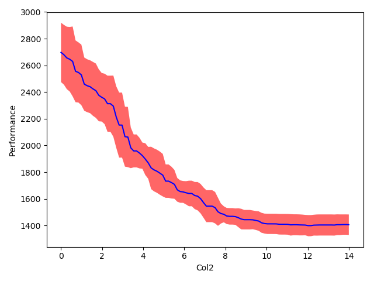

fANOVA for Starters¶
Introduction¶
Whereas many algorithms presumably depend on a large hyperparameter space, it is known that in many cases only few parameter changes can be responsible for nearly all of the performance improvement. To this end, different techniques have been proposed that score parameters based on their importance. The functional analysis of variance (fANOVA) uses an empirical performance model (EPM) which is based on random forests in order to analyze how much of the performance variance in the configuration space is explained by single parameters or combinations of few parameters.
Note that fANOVA’s result is ideally used for minimizing the hyperparameter search space and should not be seen as a flawless parameter configurator.
More detailed information in : “An Efficient Approach for Assessing Hyperparameter Importance” by Frank Hutter, Holger Hoos and Kevin Leyton-Brown
How to interpret your results¶
In order to interpret your plots, you should have in mind what kind of evaluation measurement function you wanted to consider: Either you’d like to maximize or minimize your function. Therefore, depending on this, you’d have to consider low or high performance values.
Let’s start with the online LDA example from our examples folder:
Here we have the perplexity as measurement. Thus we would like to reduce it.
First, by looking at the importance of each parameter we can clearly see that parameter Col2 is marginally most important. So the result states that the Col2 parameter by itself is responsible for approx. 62% of the perplexity’s variability across the entire space. On the contrary, Col1 is marginally less important with 3,5%.
| Parameter | Importance |
|---|---|
| Col0 | 0.066 |
| Col1 | 0.035 |
| Col2 | 0.619 |
And by looking at the pairwise marginals we have the combination of Col0 with Col2 as marginally most important.
| Parameter pair | Importance |
|---|---|
| [Col0, Col1] | 0.127 |
| [Col0, Col2] | 0.833 |
| [Col1, Col2] | 0.693 |
Now let’s take a look at the visualizations thereof:
Since Col2 was chosen as marginally more important, we will take a closer look at its single marginal plot. It shows that large values for the parameter consistently yield lower performance (in our case perplexity).

In order to capture interaction effects we take a closer look at the pairwise marginal plots of Col0 and Col2.
Here we can see that Col0 is much more important for smaller values of Col2 than for larger ones. Such an interaction cannot be shown by single marginals.

Note that nevertheless this example consists of a lower-dimensional dataset (3 parameters), fANOVA can still give interesting insights. But you should have in mind that it is important to have a large dataset consisting of enough examples so that fANOVA can deliver significant and interpretable results.